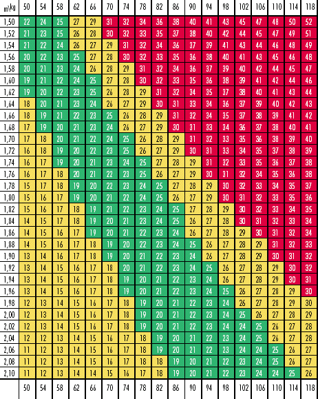

18,5-24,9 Normalgewicht
25,0-29,9 Übergewicht
 30,0-34,9 Fettleibigkeit I°
30,0-34,9 Fettleibigkeit I°35,0-39,9 Fettleibigkeit II°
über 40,0 Fettleibigkeit III°
Die einfache Formel "Körpergröße in cm minus 100" ergibt annähernd das Normalgewicht.
Man kann das Körpergewicht auch nach dem so genannten Body-Maß-Index (BMI) bewerten.
Die Formel lautet:
Körpergewicht in kg geteilt durch Körperlänge 2 in m.
Beispiel:
75 (kg) : (1,67 m)2 = 75 : 2,8 = 26,8

Einteilung:
unter 18,5 Untergewicht
18,5-24,9 Normalgewicht
25,0-29,9 Übergewicht
30,0-34,9 Fettleibigkeit I°
35,0-39,9 Fettleibigkeit II°
über 40,0 Fettleibigkeit III°
Bestimmen Sie Ihren BMI selbst: